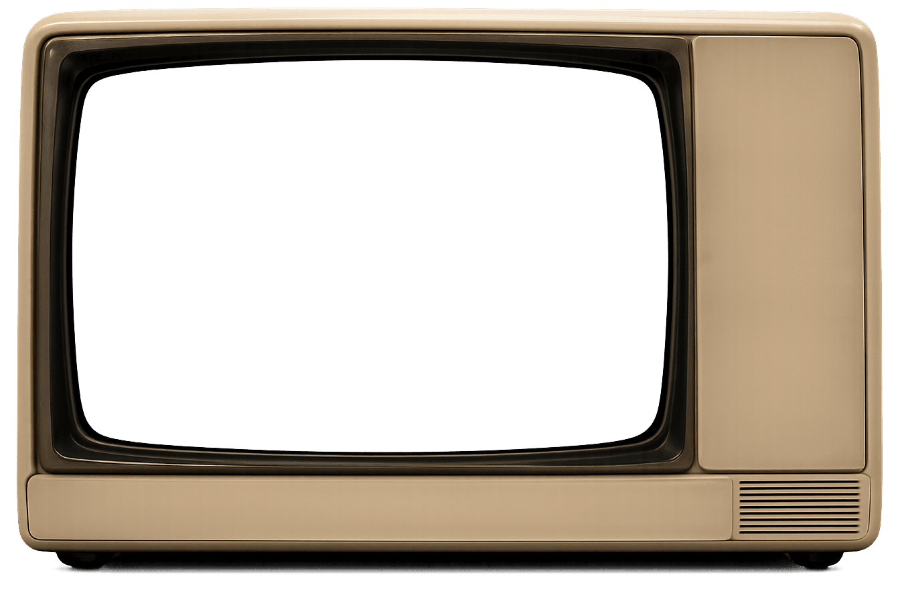
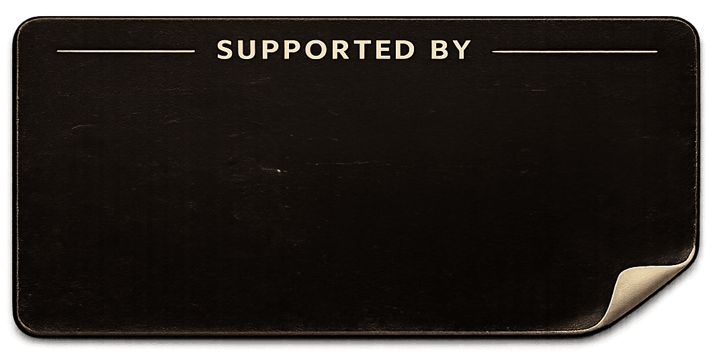

ON AIR SOON
PILOT PREVIEW


Live digital puppet shows by artistic director Ben Carlin and producer Joe Duggan,
blending storytelling, technology and audience interaction.
© 2026 Pixel Puppets · Made in the UK